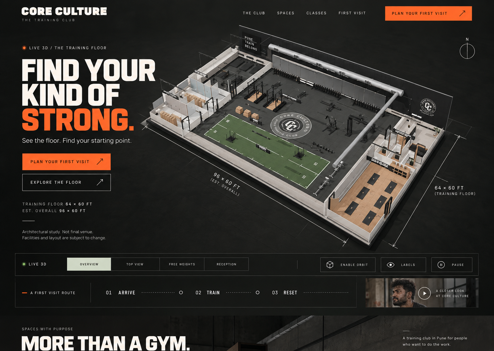

CompositionModel-first stage, headline at left, controls and first-visit route in the opening viewport.
TypeCondensed display typography paired with a quieter grotesk body face and mono-like detail labels.
ColourCharcoal, bone, pale sage, and safety orange translated directly into reusable tokens.
DifferenceThe source is a single concept frame; the implementation adds responsive controls, disclosures, and a real journey.